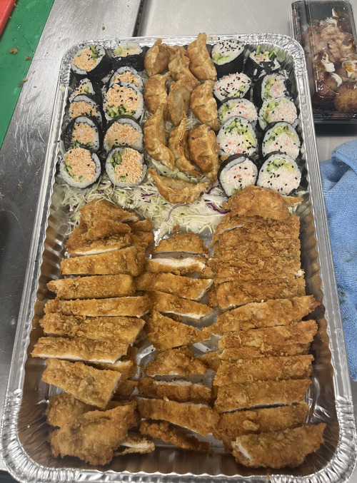
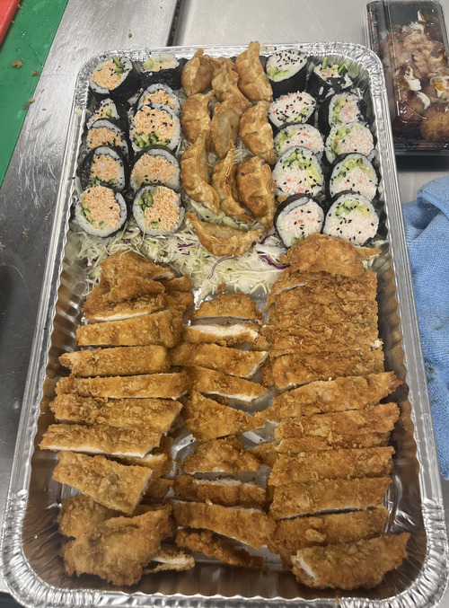
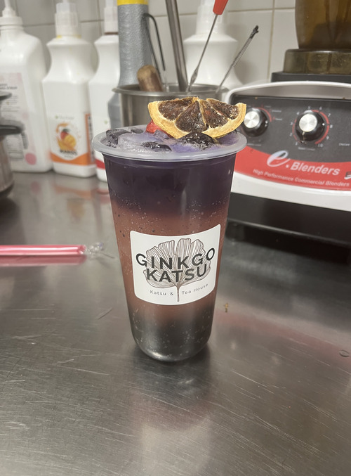
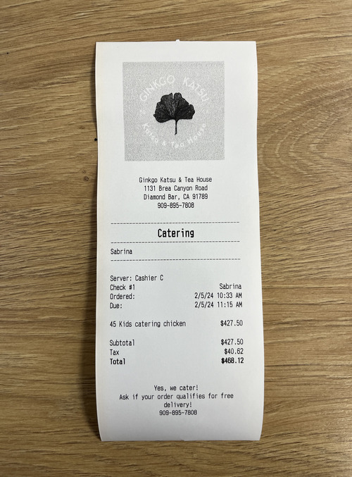
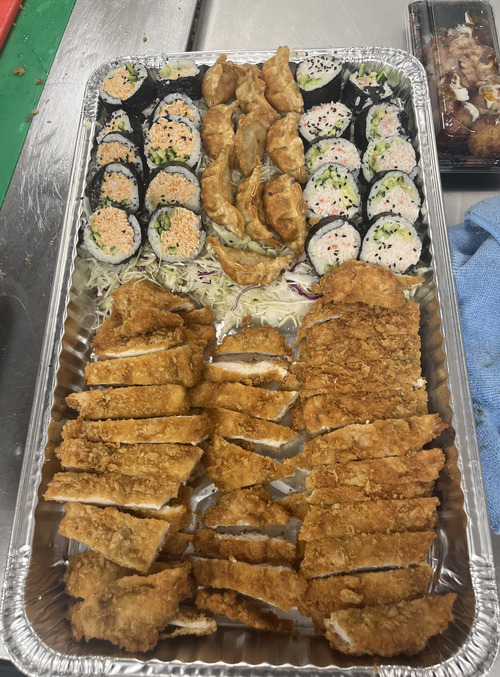
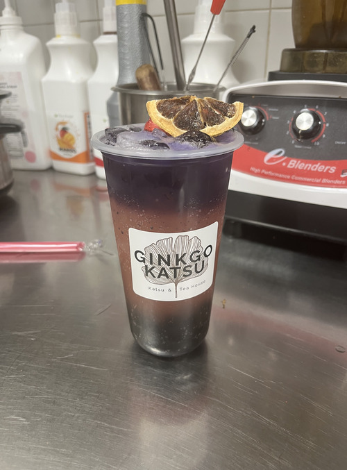
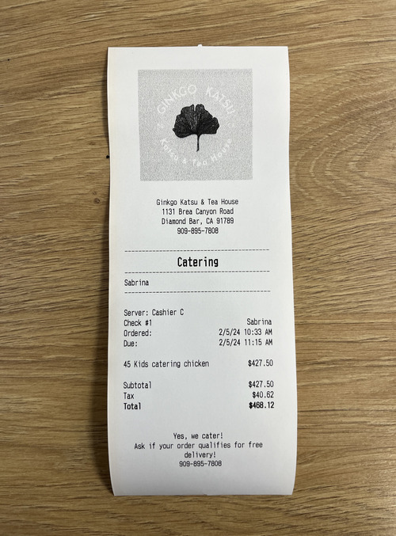

Niko Yatawara
I am a full-time student currently attending the University of California, Riverside.
As a History major, I hope to one day become an archivist for a museum or other research facility. As an avid
reader and writing enthusiast, this study and profession offers the opportunity to perform at my highest potential.
After entering the job market during my senior year of high school, I have since gained experience working
in the food and service industry. At the moment, I have maintained a shift lead position at Ginkgo Katsu—a
Japanese-Korean fusion restaurant. Having worked at Gingko Katsu for around two years, my typical
responsibilities involve general store management such as restocking housemade teas, toppings, sauces and
more, in addition to ensuring coworkers are sent out on appropriate break times. Furthermore, I am tasked
with both delivering and packaging catering orders as well as maintaining customer satisfaction. Due to
my work at Gingko, I have also become more adept at kiosk appliances and cashiering as daily register and
safe maintenance/attendance is required. Moreover, my position requires me to keep in close contact with
the store owners and managers, which has also allowed me to exercise and enhance my communication skills.
In high school, I was able to lay the foundation for the organizational and communication skills which
have allowed me to better perform at my current job as a shift lead. A large contributor for these
attributes is my work on my high school newspaper, The Bull’s Eye. I started out my career within the
publication as an Assistant News Editor in my sophomore year, eventually being promoted to the News
Editor position my junior year and finally serving as both Art and Entertainment Editor in addition to
Editor in Chief of the publication. As an editor, I was tasked with drafting and finalizing story ideas,
including the photos used alongside them, as well as managing the overall layout of the page. As such, it
was important for me to remain in constant communication with fellow editors, to ensure story ideas did
not clash so that our final paper would provide more diverse content. Furthermore, I was in charge of
both delegating tasks among my assistants, and communicating with story-writers for my section to ensure
deadlines were met. Moreover, editors partook in a monthly editorial piece in which an argument was formed
collaboratively to represent the view of the publication as a whole, on a given topic. As Editor in Chief,
my responsibilities were expanded past a singular section, to all sections of the paper. Additionally,
I was in charge of organizing the final pages of our publication and sending them to our publishers. This
also included keeping in close contact with the Business section of our paper to ensure we maintained proper
funding to afford the printing of our paper. Whatsmore, every month I was entrusted to submit an evaluation
of the entire staff, as well as evaluations of each page of the paper to ensure our staff maintained the
quality of their work.
In both my work and educational experiences, leadership and teamwork have been at the forefront of
their execution and fulfillment. As such, my current skill set revolves around these realms. In the
future, I hope to apply these attributes to my work in History, specifically as an archivist as the
profession requires personal management skills, which I feel my experiences have begun to prepare me for.
Experience
Shift Lead
• Handled catering, phone, and in-house orders
• Fulfilled barista and server roles
• Trained new staff members
Editor-in-Chief
• Facilitated story ideas
• Managed and approved overall newspaper layout
• Organized and maintained regualr staff meetings and evaluations
Sandwich Artist
• Handled customer checkout
• Regularly restocked produce, deli meats, sauces, etc.
• Fulfilled online and in-store orders
Education
University of California Riverside
Portfolio
.jpg) 



 